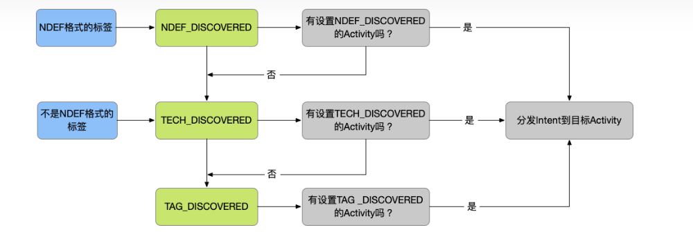

图片¶

手动打开apk¶
onCreate
附带的intent信息有,action=android.intent.action.MAIN,cat=android.intent.category.LAUNCHER
Component=io.github.stevenocean.cardreadersample/.MainActivity
bounds=[1350,42][1610,278],桌面icon显示的坐标值
10-08 12:03:10.393 7053 7053 D victor_nfc: MainActivity onCreate go in
10-08 12:03:10.394 7053 7053 D victor_nfc: MainActivity findViewById id end
10-08 12:03:10.398 7053 7053 D victor_nfc: MainActivity getDefaultAdapter end
10-08 12:03:10.398 7053 7053 D victor_nfc: MainActivity mNfcAdapter end
10-08 12:03:10.398 7053 7053 D victor_nfc: MainActivity isEnabled end
10-08 12:03:10.399 7053 7053 D victor_nfc: MainActivity getIntent = Intent { act=android.intent.action.MAIN cat=[android.intent.category.LAUNCHER] flg=0x10200000 cmp=io.github.stevenocean.cardreadersample/.MainActivity bnds=[1350,42][1610,278] }
10-08 12:03:10.399 7053 7053 D victor_nfc: processIntent intent.getAction() = android.intent.action.MAIN
10-08 12:03:10.407 7053 7053 D victor_nfc: MainActivity onResume begin
onResume
onResume对应有执行 mNfcAdapter.enableReaderMode(this, this,NfcAdapter.FLAG_READER_NFC_A |NfcAdapter.FLAG_READER_SKIP_NDEF_CHECK,null);
10-08 12:03:10.407 7053 7053 D victor_nfc: MainActivity onResume begin
10-08 12:03:10.409 4044 4928 I libnfc_nci: [INFO:NativeNfcManager.cpp(1318)] nfcManager_enableDiscovery: enter; tech_mask = 01
10-08 12:03:10.409 4044 4928 I libnfc_nci: [INFO:PowerSwitch.cpp(154)] PowerSwitch::setLevel: level=PS-FULL (1)
10-08 12:03:10.409 4044 4928 I libnfc_nci: [INFO:NativeNfcManager.cpp(2219)] startRfDiscovery: is start=0
10-08 12:03:10.410 4044 4928 I libnfc_nci: [INFO:NativeNfcTag.cpp(2051)] nativeNfcTag_acquireRfInterfaceMutexLock: try to acquire lock
10-08 12:03:10.410 4044 4928 I libnfc_nci: [INFO:NativeNfcTag.cpp(2054)] nativeNfcTag_acquireRfInterfaceMutexLock: sRfInterfaceMutex lock
10-08 12:03:10.410 4044 4928 I libnfc_nci: [INFO:nfa_dm_api.cc(751)] NFA_StopRfDiscovery
10-08 12:03:10.410 4044 5694 I libnfc_nci: [INFO:nfa_sys_main.cc(77)] NFA got event 0x010F
10-08 12:03:10.410 4044 5694 I libnfc_nci: [INFO:nfa_dm_main.cc(122)] event: NFA_DM_API_STOP_RF_DISCOVERY_EVT (0x0f)
10-08 12:03:10.411 4044 5694 I libnfc_nci: [INFO:nfa_dm_act.cc(1293)] nfa_dm_act_stop_rf_discovery
01-02 01:05:20.206 0 0 I aw87xxx_mode_set_1: set mode:1 success
01-02 01:05:20.260 0 0 E nfc write: RF_DEACTIVATE_CMD 21060100
10-08 12:03:10.412 4044 5694 I libnfc_nci: [INFO:nfa_dm_discover.cc(2755)] deactivate_type:0x0
10-08 12:03:10.412 4044 5694 I libnfc_nci: [INFO:nfa_dm_discover.cc(2521)] state: DISCOVERY (1), event: DEACTIVATE_CMD(6) disc_flags: 0x2
10-08 12:03:10.412 4044 5694 I libnfc_nci: [INFO:nfc_main.cc(1203)] NFC_Deactivate 4 (IDLE) deactivate_type:0
10-08 12:03:10.412 4044 5694 I libnfc_nci: [INFO:NfcAdaptation.cc(781)] NfcAdaptation::HalWrite
10-08 12:03:10.413 781 781 D NfccPowerTracker: NfccPowerTracker::ProcessCmd: Enter,Recieved len :4
10-08 12:03:10.414 781 5697 D NxpTml : PN54X - Write requested.....
10-08 12:03:10.414 781 5697 D NxpTml : PN54X - Invoking I2C Write.....
01-02 01:05:20.274 0 0 E i2c_geni 4c88000.i2c: i2c error :-107
01-02 01:05:20.280 0 0 W i2c_write: write failed ret(-107), maybe in standby
10-08 12:03:10.436 781 5697 D NxpTml : Write errno : 6b
10-08 12:03:10.436 781 5697 D NxpTml : PN54X - Error in I2C Write.....
10-08 12:03:10.437 781 5697 D NxpTml : PN54X - Posting Fresh Write message.....
10-08 12:03:10.437 781 5697 D NxpTml : PN54X - Tml Writer Thread Running................
10-08 12:03:10.437 781 5699 D NxpHal : write error status = 0x1ff
10-08 12:03:10.437 781 781 D NxpHal : write_unlocked failed - PN54X Maybe in Standby Mode - Retry
10-08 12:03:10.448 781 5697 D NxpTml : PN54X - Write requested.....
10-08 12:03:10.448 781 5697 D NxpTml : PN54X - Invoking I2C Write.....
01-02 01:05:20.294 0 0 E nfc write: RF_DEACTIVATE_CMD 21060100
10-08 12:03:10.457 781 5697 D NxpNciX : len = 4 > 21060100
10-08 12:03:10.457 781 5697 D NxpTml : PN54X - I2C Write successful.....
10-08 12:03:10.457 781 5697 D NxpTml : PN54X - Posting Fresh Write message.....
10-08 12:03:10.457 781 5697 D NxpTml : PN54X - Tml Writer Thread Running................
10-08 12:03:10.458 781 5699 D NxpHal : write successful status = 0x0
10-08 12:03:10.468 4044 5694 I libnfc_nci: [INFO:nfa_dm_discover.cc(2574)] new state: DISCOVERY (1), disc_flags: 0x22
10-08 12:03:10.471 746 3591 D msm8974_platform: platform_set_channel_map mixer_ctl_name:Playback Channel Map13
10-08 12:03:10.472 4044 5694 I libnfc_nci: [INFO:nfa_sys_ptim.cc(156)] nfa_sys_ptim_stop_timer 0x77cf962bd0
10-08 12:03:10.472 746 3591 D msm8974_platform: platform_set_channel_map: set mapping(1 2 0 0 0 0 0 0) for channel:2
10-08 12:03:10.472 4044 5694 I libnfc_nci: [INFO:nfa_sys_ptim.cc(163)] ptim timer stop
10-08 12:03:10.472 4044 5694 I libnfc_nci: [INFO:nfa_rw_act.cc(211)] Stopped presence check timer (if started)
10-08 12:03:10.473 746 3591 E audio_hw_extn: audio_extn_perf_lock_release: Perf lock release error
01-02 01:05:20.322 0 0 E nfc nRead: RF_DEACTIVATE_RSP 41060100
10-08 12:03:10.473 746 3591 D audio_hw_primary: start_output_stream: exit
10-08 12:03:10.473 746 3591 D audio_hw_primary: out_write: retry previous failed cal level set
10-08 12:03:10.474 746 3591 D msm8974_platform: platform_split_snd_device: snd_device(2) num devices(1) new_snd_devices(0)
10-08 12:03:10.474 746 3591 D msm8974_platform: platform_split_snd_device: snd_device(2) num devices(0) new_snd_devices(0)
10-08 12:03:10.474 746 3591 I msm8974_platform: platform_get_custom_mtmx_params: no matching param with id 0 ip_ch 2 op_ch 2 uc_id 1 snd_dev 2
10-08 12:03:10.484 781 5696 D NxpTml : PN54X - I2C Read successful.....
10-08 12:03:10.484 781 5696 D NxpNciR : len = 4 > 41060100
10-08 12:03:10.484 781 5696 D NxpTml : PN54X - Posting read message.....
10-08 12:03:10.485 781 5699 D NxpHal : read successful status = 0x0
10-08 12:03:10.486 4044 5694 I libnfc_nci: [INFO:nfc_ncif.cc(460)] NFC received rsp gid:1
10-08 12:03:10.486 4044 5694 I libnfc_nci: [INFO:nfa_dm_discover.cc(2929)] P2P_Prio_Logic
10-08 12:03:10.486 4044 5694 I libnfc_nci: [INFO:nfa_dm_discover.cc(2937)] nfa_dm_p2p_prio_logic event_type = 0x1
10-08 12:03:10.487 4044 5694 I libnfc_nci: [INFO:nfa_dm_discover.cc(3033)] returning TRUE
10-08 12:03:10.487 4044 5694 I libnfc_nci: [INFO:nfc_main.cc(368)] nfc_set_state 4 (IDLE)->4 (IDLE)
10-08 12:03:10.489 781 5696 D NxpTml : PN54X - Read requested.....
10-08 12:03:10.488 4044 5694 I libnfc_nci: [INFO:nfa_dm_discover.cc(1672)] nfa_dm_disc_data_cback
10-08 12:03:10.489 781 5696 D NxpTml : PN54X - Invoking I2C Read.....
10-08 12:03:10.489 4044 5694 I libnfc_nci: [INFO:nfa_dm_discover.cc(703)] event:0x4005
10-08 12:03:10.489 4044 5694 I libnfc_nci: [INFO:nfa_dm_discover.cc(2521)] state: DISCOVERY (1), event: DEACTIVATE_RSP(7) disc_flags: 0x22
10-08 12:03:10.490 4044 5694 I libnfc_nci: [INFO:nfa_dm_discover.cc(1695)] old_state: DISCOVERY (1), new_state: IDLE (0) disc_flags: 0x2
10-08 12:03:10.490 4044 5694 I libnfc_nci: [INFO:NativeNfcManager.cpp(305)] nfaConnectionCallback: event= 31
10-08 12:03:10.490 4044 5694 I libnfc_nci: [INFO:NativeNfcManager.cpp(340)] nfaConnectionCallback: NFA_RF_DISCOVERY_STOPPED_EVT: status = 0
10-08 12:03:10.490 4044 5694 I libnfc_nci: [INFO:nfa_dm_discover.cc(893)] nfa_dm_start_rf_discover
10-08 12:03:10.491 4044 5694 I libnfc_nci: [INFO:nfa_dm_discover.cc(2574)] new state: IDLE (0), disc_flags: 0x0
10-08 12:03:10.491 4044 4928 I libnfc_nci: [INFO:NativeNfcTag.cpp(2069)] nativeNfcTag_releaseRfInterfaceMutexLock: sRfInterfaceMutex unlock
10-08 12:03:10.492 4044 4928 I libnfc_nci: [INFO:NativeNfcTag.cpp(2051)] nativeNfcTag_acquireRfInterfaceMutexLock: try to acquire lock
10-08 12:03:10.493 4044 4928 I libnfc_nci: [INFO:NativeNfcTag.cpp(2054)] nativeNfcTag_acquireRfInterfaceMutexLock: sRfInterfaceMutex lock
10-08 12:03:10.493 4044 4928 I libnfc_nci: [INFO:NativeNfcManager.cpp(2349)] stopPolling_rfDiscoveryDisabled: disable polling
10-08 12:03:10.493 4044 4928 I libnfc_nci: [INFO:nfa_dm_api.cc(507)] NFA_DisablePolling
10-08 12:03:10.494 4044 5694 I libnfc_nci: [INFO:nfa_sys_main.cc(77)] NFA got event 0x0107
10-08 12:03:10.494 4044 5694 I libnfc_nci: [INFO:nfa_dm_main.cc(122)] event: NFA_DM_API_DISABLE_POLLING_EVT (0x07)
10-08 12:03:10.494 4044 5694 I libnfc_nci: [INFO:nfa_dm_act.cc(1076)] nfa_dm_act_disable_polling
10-08 12:03:10.495 4044 5694 I libnfc_nci: [INFO:nfa_dm_act.cc(1045)] nfa_dm_deactivate_polling
10-08 12:03:10.495 4044 5694 I libnfc_nci: [INFO:nfa_dm_discover.cc(2701)] handle=0x1
10-08 12:03:10.495 4044 5694 I libnfc_nci: [INFO:NativeNfcManager.cpp(305)] nfaConnectionCallback: event= 1
10-08 12:03:10.495 4044 5694 I libnfc_nci: [INFO:NativeNfcManager.cpp(320)] nfaConnectionCallback: NFA_POLL_DISABLED_EVT: status = 0
10-08 12:03:10.499 4044 4928 I libnfc_nci: [INFO:NativeNfcTag.cpp(2069)] nativeNfcTag_releaseRfInterfaceMutexLock: sRfInterfaceMutex unlock
10-08 12:03:10.499 4044 4928 I libnfc_nci: [INFO:NativeNfcTag.cpp(2051)] nativeNfcTag_acquireRfInterfaceMutexLock: try to acquire lock
10-08 12:03:10.499 4044 4928 I libnfc_nci: [INFO:NativeNfcTag.cpp(2054)] nativeNfcTag_acquireRfInterfaceMutexLock: sRfInterfaceMutex lock
10-08 12:03:10.499 4044 4928 I libnfc_nci: [INFO:NativeNfcManager.cpp(2327)] startPolling_rfDiscoveryDisabled: enable polling
10-08 12:03:10.499 4044 4928 I libnfc_nci: [INFO:nfa_dm_api.cc(473)] 0x1
10-08 12:03:10.499 4044 4928 I libnfc_nci: [INFO:NativeNfcManager.cpp(2331)] startPolling_rfDiscoveryDisabled: wait for enable event
10-08 12:03:10.500 4044 5694 I libnfc_nci: [INFO:nfa_sys_main.cc(77)] NFA got event 0x0106
10-08 12:03:10.500 4044 5694 I libnfc_nci: [INFO:nfa_dm_main.cc(122)] event: NFA_DM_API_ENABLE_POLLING_EVT (0x06)
10-08 12:03:10.500 4044 5694 I libnfc_nci: [INFO:nfa_dm_act.cc(1011)] nfa_dm_act_enable_polling
10-08 12:03:10.500 4044 5694 I libnfc_nci: [INFO:nfa_dm_act.cc(939)] nfa_dm_start_polling
10-08 12:03:10.500 4044 5694 I libnfc_nci: [INFO:nfa_dm_discover.cc(2594)] disc_mask=0x600f
10-08 12:03:10.500 4044 5694 I libnfc_nci: [INFO:NativeNfcManager.cpp(305)] nfaConnectionCallback: event= 0
10-08 12:03:10.500 4044 5694 I libnfc_nci: [INFO:NativeNfcManager.cpp(311)] nfaConnectionCallback: NFA_POLL_ENABLED_EVT: status = 0
10-08 12:03:10.501 4044 4928 I libnfc_nci: [INFO:NativeNfcTag.cpp(2069)] nativeNfcTag_releaseRfInterfaceMutexLock: sRfInterfaceMutex unlock
10-08 12:03:10.501 4044 4928 I libnfc_nci: [INFO:NativeNfcManager.cpp(1340)] nfcManager_enableDiscovery: Enable p2pListening
10-08 12:03:10.501 4044 4928 I libnfc_nci: [INFO:PeerToPeer.cpp(1119)] PeerToPeer::enableP2pListening: enter isEnable: 0 mIsP2pListening: 0
10-08 12:03:10.501 4044 4928 I libnfc_nci: [INFO:PeerToPeer.cpp(1143)] PeerToPeer::enableP2pListening: exit; mIsP2pListening: 0
10-08 12:03:10.501 4044 4928 I libnfc_nci: [INFO:nfa_dm_api.cc(618)] NFA_PauseP2p
10-08 12:03:10.501 4044 4928 I libnfc_nci: [INFO:nfa_dm_api.cc(581)] NFA_DisableListening
10-08 12:03:10.501 4044 4928 I libnfc_nci: [INFO:nfa_dm_api.cc(275)] param_id:0x85
10-08 12:03:10.501 4044 4928 I libnfc_nci: [INFO:nfa_dm_api.cc(790)] NFA_SetRfDiscoveryDuration
10-08 12:03:10.501 4044 4928 I libnfc_nci: [INFO:nfa_ee_api.cc(495)] handle:<0x0>clear protocol_mask:<0x8>
10-08 12:03:10.502 4044 4928 I libnfc_nci: [INFO:nfa_ee_main.cc(403)] nfa_ee_find_ecb
10-08 12:03:10.502 4044 5694 I libnfc_nci: [INFO:nfa_sys_main.cc(77)] NFA got event 0x010A
10-08 12:03:10.502 4044 5694 I libnfc_nci: [INFO:nfa_dm_main.cc(122)] event: NFA_DM_API_PAUSE_P2P_EVT (0x0a)
10-08 12:03:10.502 4044 5694 I libnfc_nci: [INFO:nfa_dm_act.cc(1152)] nfa_dm_act_pause_p2p
10-08 12:03:10.502 4044 5694 I libnfc_nci: [INFO:NativeNfcManager.cpp(305)] nfaConnectionCallback: event= 38
10-08 12:03:10.502 4044 5694 I libnfc_nci: [INFO:NativeNfcManager.cpp(707)] nfaConnectionCallback: unknown event ????
01-02 01:05:20.349 0 0 E nfc write: CORE_SET_CONFIG_CMD 20020401850100
10-08 12:03:10.502 4044 5694 I libnfc_nci: [INFO:nfa_sys_main.cc(77)] NFA got event 0x0109
10-08 12:03:10.502 4044 5694 I libnfc_nci: [INFO:nfa_dm_main.cc(122)] event: NFA_DM_API_DISABLE_LISTENING_EVT (0x09)
10-08 12:03:10.502 4044 5694 I libnfc_nci: [INFO:nfa_dm_act.cc(1131)] nfa_dm_act_disable_listening
10-08 12:03:10.502 4044 5694 I libnfc_nci: [INFO:NativeNfcManager.cpp(305)] nfaConnectionCallback: event= 37
10-08 12:03:10.503 4044 5694 I libnfc_nci: [INFO:NativeNfcManager.cpp(707)] nfaConnectionCallback: unknown event ????
10-08 12:03:10.503 4044 5694 I libnfc_nci: [INFO:nfa_sys_main.cc(77)] NFA got event 0x0102
10-08 12:03:10.503 4044 5694 I libnfc_nci: [INFO:nfa_dm_main.cc(122)] event: NFA_DM_API_SET_CONFIG_EVT (0x02)
10-08 12:03:10.503 4044 5694 I libnfc_nci: [INFO:nfa_dm_main.cc(226)] nfa_dm_check_set_config
10-08 12:03:10.503 4044 5694 I libnfc_nci: [INFO:NfcAdaptation.cc(781)] NfcAdaptation::HalWrite
10-08 12:03:10.503 781 781 D NfccPowerTracker: NfccPowerTracker::ProcessCmd: Enter,Recieved len :7
10-08 12:03:10.503 781 5697 D NxpTml : PN54X - Write requested.....
10-08 12:03:10.504 781 5697 D NxpTml : PN54X - Invoking I2C Write.....
10-08 12:03:10.512 781 5697 D NxpNciX : len = 7 > 20020401850100
10-08 12:03:10.512 781 5697 D NxpTml : PN54X - I2C Write successful.....
10-08 12:03:10.512 781 5697 D NxpTml : PN54X - Posting Fresh Write message.....
10-08 12:03:10.512 781 5697 D NxpTml : PN54X - Tml Writer Thread Running................
10-08 12:03:10.513 781 5699 D NxpHal : write successful status = 0x0
10-08 12:03:10.513 4044 5694 I libnfc_nci: [INFO:nfa_sys_main.cc(77)] NFA got event 0x0110
10-08 12:03:10.513 4044 5694 I libnfc_nci: [INFO:nfa_dm_main.cc(122)] event: NFA_DM_API_SET_RF_DISC_DURATION_EVT (0x10)
10-08 12:03:10.513 4044 5694 I libnfc_nci: [INFO:nfa_sys_main.cc(77)] NFA got event 0x0207
10-08 12:03:10.513 4044 5694 I libnfc_nci: [INFO:nfa_ee_main.cc(641)] Event API_CLEAR_PROTO_CFG(0x207), State: INIT_DONE(1)
10-08 12:03:10.513 4044 5694 I libnfc_nci: [INFO:nfa_ee_act.cc(219)] nfa_ee_update_route_size nfcee_id:0x0 size_mask_proto:5 size_mask_tech:15
10-08 12:03:10.514 4044 5694 I libnfc_nci: [INFO:RoutingManager.cpp(802)] RoutingManager::nfaEeCallback: NFA_EE_CLEAR_PROTO_CFG_EVT; status=0x0
10-08 12:03:10.514 4044 4928 I libnfc_nci: [INFO:nfa_ee_api.cc(365)] handle:<0x0>clear technology_mask:<0x1>
10-08 12:03:10.514 4044 4928 I libnfc_nci: [INFO:nfa_ee_main.cc(403)] nfa_ee_find_ecb
10-08 12:03:10.515 4044 5694 I libnfc_nci: [INFO:nfa_sys_main.cc(77)] NFA got event 0x0205
10-08 12:03:10.515 4044 5694 I libnfc_nci: [INFO:nfa_ee_main.cc(641)] Event API_CLEAR_TECH_CFG(0x205), State: INIT_DONE(1)
10-08 12:03:10.515 4044 5694 I libnfc_nci: [INFO:nfa_ee_act.cc(219)] nfa_ee_update_route_size nfcee_id:0x0 size_mask_proto:5 size_mask_tech:10
10-08 12:03:10.515 4044 5694 I libnfc_nci: [INFO:RoutingManager.cpp(788)] RoutingManager::nfaEeCallback: NFA_EE_CLEAR_TECH_CFG_EVT; status=0x0
10-08 12:03:10.515 4044 4928 I libnfc_nci: [INFO:nfa_ee_api.cc(365)] handle:<0x0>clear technology_mask:<0x2>
10-08 12:03:10.515 4044 4928 I libnfc_nci: [INFO:nfa_ee_main.cc(403)] nfa_ee_find_ecb
10-08 12:03:10.516 4044 5694 I libnfc_nci: [INFO:nfa_sys_main.cc(77)] NFA got event 0x0205
10-08 12:03:10.516 4044 5694 I libnfc_nci: [INFO:nfa_ee_main.cc(641)] Event API_CLEAR_TECH_CFG(0x205), State: INIT_DONE(1)
10-08 12:03:10.516 4044 5694 I libnfc_nci: [INFO:nfa_ee_act.cc(219)] nfa_ee_update_route_size nfcee_id:0x0 size_mask_proto:5 size_mask_tech:5
10-08 12:03:10.516 4044 5694 I libnfc_nci: [INFO:RoutingManager.cpp(788)] RoutingManager::nfaEeCallback: NFA_EE_CLEAR_TECH_CFG_EVT; status=0x0
10-08 12:03:10.516 4044 4928 I libnfc_nci: [INFO:nfa_ee_api.cc(365)] handle:<0x0>clear technology_mask:<0x4>
10-08 12:03:10.516 4044 4928 I libnfc_nci: [INFO:nfa_ee_main.cc(403)] nfa_ee_find_ecb
10-08 12:03:10.517 4044 5694 I libnfc_nci: [INFO:nfa_sys_main.cc(77)] NFA got event 0x0205
10-08 12:03:10.517 4044 5694 I libnfc_nci: [INFO:nfa_ee_main.cc(641)] Event API_CLEAR_TECH_CFG(0x205), State: INIT_DONE(1)
10-08 12:03:10.517 4044 5694 I libnfc_nci: [INFO:nfa_ee_act.cc(219)] nfa_ee_update_route_size nfcee_id:0x0 size_mask_proto:5 size_mask_tech:0
10-08 12:03:10.517 4044 5694 I libnfc_nci: [INFO:RoutingManager.cpp(788)] RoutingManager::nfaEeCallback: NFA_EE_CLEAR_TECH_CFG_EVT; status=0x0
10-08 12:03:10.518 4044 4928 I libnfc_nci: [INFO:RoutingManager.cpp(357)] RoutingManager::commitRouting
10-08 12:03:10.518 4044 4928 I libnfc_nci: [INFO:nfa_ee_api.cc(803)] NFA_EeUpdateNow
10-08 12:03:10.518 4044 5694 I libnfc_nci: [INFO:nfa_sys_main.cc(77)] NFA got event 0x020D
10-08 12:03:10.518 4044 5694 I libnfc_nci: [INFO:nfa_ee_main.cc(641)] Event API_UPDATE_NOW(0x20d), State: INIT_DONE(1)
10-08 12:03:10.518 4044 5694 I libnfc_nci: [INFO:nfa_sys_ptim.cc(156)] nfa_sys_ptim_stop_timer 0x77cf9620c8
10-08 12:03:10.518 4044 5694 I libnfc_nci: [INFO:nfa_sys_ptim.cc(163)] ptim timer stop
10-08 12:03:10.518 4044 5694 I libnfc_nci: [INFO:nfa_ee_act.cc(2745)] nfa_ee_rout_timeout
10-08 12:03:10.518 4044 5694 I libnfc_nci: [INFO:nfa_ee_act.cc(2705)] ee_cfged: 0xa0 ee_cfg_sts: 0x10
10-08 12:03:10.518 4044 5694 I libnfc_nci: [INFO:nfa_ee_act.cc(2716)] 0: ecb_flags : 0x06, mask: 0x20
10-08 12:03:10.518 4044 5694 I libnfc_nci: [INFO:nfa_ee_act.cc(2876)] nfa_ee_update_rout ee_cfg_sts:0x10
10-08 12:03:10.518 4044 5694 I libnfc_nci: [INFO:nfa_ee_main.cc(641)] Event CFG_TO_NFCC(0x21b), State: INIT_DONE(1)
10-08 12:03:10.519 4044 5694 I libnfc_nci: [INFO:nfa_ee_act.cc(2851)] nfa_ee_lmrt_to_nfcc --add the routing for DH!!
10-08 12:03:10.519 4044 5694 I libnfc_nci: [INFO:nfa_ee_act.cc(2592)] nfa_ee_route_add_one_ecb_by_route_order - max_len:720, cur_offset:0, more:1, num_tlv:0,rout_type:- 1
10-08 12:03:10.519 4044 5694 I libnfc_nci: [INFO:nfa_ee_act.cc(474)] nfa_ee_add_aid_route_to_ecb - No AID entries available
10-08 12:03:10.519 4044 5694 I libnfc_nci: [INFO:nfa_ee_act.cc(315)] nfa_ee_total_lmrt_size size:11
10-08 12:03:10.519 4044 5694 I libnfc_nci: [INFO:nfa_ee_act.cc(2638)] ee_cfg_sts:0x11 lmrt_size:11
10-08 12:03:10.519 4044 5694 I libnfc_nci: [INFO:nfa_ee_act.cc(2851)] nfa_ee_lmrt_to_nfcc --add the routing for DH!!
10-08 12:03:10.519 4044 5694 I libnfc_nci: [INFO:nfa_ee_act.cc(2592)] nfa_ee_route_add_one_ecb_by_route_order - max_len:720, cur_offset:0, more:1, num_tlv:0,rout_type:- 2
10-08 12:03:10.519 4044 5694 I libnfc_nci: [INFO:nfa_ee_act.cc(2623)] nfa_ee_route_add_one_ecb_by_route_order - Route type - NA:- 2
10-08 12:03:10.519 4044 5694 I libnfc_nci: [INFO:nfa_ee_act.cc(315)] nfa_ee_total_lmrt_size size:11
10-08 12:03:10.519 4044 5694 I libnfc_nci: [INFO:nfa_ee_act.cc(2638)] ee_cfg_sts:0x11 lmrt_size:11
10-08 12:03:10.519 4044 5694 I libnfc_nci: [INFO:nfa_ee_act.cc(2851)] nfa_ee_lmrt_to_nfcc --add the routing for DH!!
10-08 12:03:10.519 4044 5694 I libnfc_nci: [INFO:nfa_ee_act.cc(2592)] nfa_ee_route_add_one_ecb_by_route_order - max_len:720, cur_offset:0, more:1, num_tlv:0,rout_type:- 3
10-08 12:03:10.520 4044 5694 I libnfc_nci: [INFO:nfa_ee_act.cc(524)] nfa_ee_route_add_one_ecb_by_route_order --num_tlv:- 1
10-08 12:03:10.520 4044 5694 I libnfc_nci: [INFO:nfa_ee_act.cc(315)] nfa_ee_total_lmrt_size size:11
10-08 12:03:10.520 4044 5694 I libnfc_nci: [INFO:nfa_ee_act.cc(2638)] ee_cfg_sts:0x11 lmrt_size:11
10-08 12:03:10.520 4044 5694 I libnfc_nci: [INFO:nfa_ee_act.cc(2851)] nfa_ee_lmrt_to_nfcc --add the routing for DH!!
10-08 12:03:10.520 4044 5694 I libnfc_nci: [INFO:nfa_ee_act.cc(2592)] nfa_ee_route_add_one_ecb_by_route_order - max_len:720, cur_offset:6, more:1, num_tlv:1,rout_type:- 4
10-08 12:03:10.520 4044 5694 I libnfc_nci: [INFO:nfa_ee_act.cc(399)] nfa_ee_add_proto_route_to_ecb - NFC DEP added for DH!!!
10-08 12:03:10.520 4044 5694 I libnfc_nci: [INFO:nfa_ee_act.cc(315)] nfa_ee_total_lmrt_size size:11
10-08 12:03:10.520 4044 5694 I libnfc_nci: [INFO:nfa_ee_act.cc(2638)] ee_cfg_sts:0x11 lmrt_size:11
01-02 01:05:20.362 0 0 E nfc nRead: CORE_SET_CONFIG_RSP 4002020000
10-08 12:03:10.520 4044 5694 I libnfc_nci: [INFO:nfa_ee_act.cc(2851)] nfa_ee_lmrt_to_nfcc --add the routing for DH!!
10-08 12:03:10.520 4044 5694 I libnfc_nci: [INFO:nfa_ee_act.cc(2592)] nfa_ee_route_add_one_ecb_by_route_order - max_len:720, cur_offset:11, more:0, num_tlv:2,rout_type:- 5
10-08 12:03:10.520 4044 5694 I libnfc_nci: [INFO:nfa_ee_act.cc(315)] nfa_ee_total_lmrt_size size:11
10-08 12:03:10.520 4044 5694 I libnfc_nci: [INFO:nfa_ee_act.cc(2638)] ee_cfg_sts:0x11 lmrt_size:11
10-08 12:03:10.520 4044 5694 I libnfc_nci: [INFO:nfa_ee_act.cc(2649)] nfa_ee_route_add_one_ecb_by_route_order : set routing num_tlv:2 tlv_size:11
10-08 12:03:10.521 4044 5694 I libnfc_nci: [INFO:nfa_ee_act.cc(2898)] nfa_ee_update_rout ee_cfg_sts:0x10 ee_cfged:0x20
10-08 12:03:10.523 781 5696 D NxpTml : PN54X - I2C Read successful.....
10-08 12:03:10.523 781 5696 D NxpNciR : len = 5 > 4002020000
10-08 12:03:10.523 781 5696 D NxpTml : PN54X - Posting read message.....
10-08 12:03:10.523 781 5699 D NxpHal : read successful status = 0x0
10-08 12:03:10.525 781 5699 D NxpHal : phNxpNciHal_print_res_status: response status =STATUS_OK
10-08 12:03:10.526 4044 5694 I libnfc_nci: [INFO:nfc_ncif.cc(460)] NFC received rsp gid:0
10-08 12:03:10.526 4044 5694 I libnfc_nci: [INFO:nci_hrcv.cc(62)] nci_proc_core_rsp opcode:0x2
10-08 12:03:10.526 4044 5694 I libnfc_nci: [INFO:nfa_dm_act.cc(292)] NFC_SET_CONFIG_REVT(0x5002)
10-08 12:03:10.527 4044 5694 I libnfc_nci: [INFO:NativeNfcManager.cpp(808)] nfaDeviceManagementCallback: enter; event=0x2
10-08 12:03:10.527 4044 5694 I libnfc_nci: [INFO:NativeNfcManager.cpp(833)] nfaDeviceManagementCallback: NFA_DM_SET_CONFIG_EVT
10-08 12:03:10.527 4044 5694 I libnfc_nci: [INFO:NfcAdaptation.cc(781)] NfcAdaptation::HalWrite
10-08 12:03:10.527 781 5696 D NxpTml : PN54X - Read requested.....
10-08 12:03:10.527 781 5696 D NxpTml : PN54X - Invoking I2C Read.....
10-08 12:03:10.527 781 781 D NfccPowerTracker: NfccPowerTracker::ProcessCmd: Enter,Recieved len :16
10-08 12:03:10.527 781 5697 D NxpTml : PN54X - Write requested.....
10-08 12:03:10.527 781 5697 D NxpTml : PN54X - Invoking I2C Write.....
01-02 01:05:20.373 0 0 E nfc write: RF_SET_LISTEN_MODE_ROUTING_CMD 21010D000203040000FEFE0103000105
10-08 12:03:10.537 781 5697 D NxpNciX : len = 16 > 21010D000203040000FEFE0103000105
10-08 12:03:10.537 781 5697 D NxpTml : PN54X - I2C Write successful.....
10-08 12:03:10.537 781 5697 D NxpTml : PN54X - Posting Fresh Write message.....
10-08 12:03:10.537 781 5697 D NxpTml : PN54X - Tml Writer Thread Running................
10-08 12:03:10.537 781 5699 D NxpHal : write successful status = 0x0
01-02 01:05:20.386 0 0 E nfc nRead: RF_SET_LISTEN_MODE_ROUTING_RSP 41010100
10-08 12:03:10.549 781 5696 D NxpTml : PN54X - I2C Read successful.....
10-08 12:03:10.549 781 5696 D NxpNciR : len = 4 > 41010100
10-08 12:03:10.549 781 5696 D NxpTml : PN54X - Posting read message.....
10-08 12:03:10.549 781 5699 D NxpHal : read successful status = 0x0
10-08 12:03:10.551 4044 5694 I libnfc_nci: [INFO:nfc_ncif.cc(460)] NFC received rsp gid:1
10-08 12:03:10.551 781 5696 D NxpTml : PN54X - Read requested.....
10-08 12:03:10.551 781 5696 D NxpTml : PN54X - Invoking I2C Read.....
10-08 12:03:10.551 4044 5694 I libnfc_nci: [INFO:nfa_dm_act.cc(292)] NFC_SET_ROUTING_REVT(0x500a)
10-08 12:03:10.551 4044 5694 I libnfc_nci: [INFO:nfa_ee_main.cc(359)] nfa_ee_proc_evt: event=0x500a int_event:0x218
10-08 12:03:10.552 4044 5694 I libnfc_nci: [INFO:nfa_ee_main.cc(641)] Event NCI_WAIT_RSP(0x218), State: INIT_DONE(1)
10-08 12:03:10.552 4044 5694 I libnfc_nci: [INFO:nfa_ee_act.cc(2273)] ee_wait_evt:0x30 wait_rsp:1
10-08 12:03:10.552 4044 5694 I libnfc_nci: [INFO:nfa_ee_act.cc(2246)] nfa_ee_report_update_evt ee_wait_evt:0x30 wait_rsp:0
10-08 12:03:10.552 4044 5694 I libnfc_nci: [INFO:RoutingManager.cpp(894)] RoutingManager::nfaEeCallback: NFA_EE_UPDATED_EVT
10-08 12:03:10.552 4044 4928 I libnfc_nci: [INFO:NativeNfcManager.cpp(2219)] startRfDiscovery: is start=1
10-08 12:03:10.552 4044 4928 I libnfc_nci: [INFO:NativeNfcTag.cpp(2051)] nativeNfcTag_acquireRfInterfaceMutexLock: try to acquire lock
10-08 12:03:10.552 4044 4928 I libnfc_nci: [INFO:NativeNfcTag.cpp(2054)] nativeNfcTag_acquireRfInterfaceMutexLock: sRfInterfaceMutex lock
10-08 12:03:10.552 4044 4928 I libnfc_nci: [INFO:nfa_dm_api.cc(721)] NFA_StartRfDiscovery
10-08 12:03:10.553 4044 5694 I libnfc_nci: [INFO:nfa_sys_main.cc(77)] NFA got event 0x010E
10-08 12:03:10.553 4044 5694 I libnfc_nci: [INFO:nfa_dm_main.cc(122)] event: NFA_DM_API_START_RF_DISCOVERY_EVT (0x0e)
10-08 12:03:10.553 4044 5694 I libnfc_nci: [INFO:nfa_dm_act.cc(1264)] nfa_dm_act_start_rf_discovery
10-08 12:03:10.554 4044 5694 I libnfc_nci: [INFO:nfa_dm_discover.cc(893)] nfa_dm_start_rf_discover
10-08 12:03:10.554 4044 5694 I libnfc_nci: [INFO:nfa_ee_act.cc(2516)] 1
10-08 12:03:10.554 4044 5694 I libnfc_nci: [INFO:nfa_ee_act.cc(2540)] 0x0, 0x0, 0x0, 0x0
10-08 12:03:10.554 4044 5694 I libnfc_nci: [INFO:nfa_dm_discover.cc(1021)] nfa_dm_cb.disc_cb.entry[0].selected_disc_mask = 0x140000
10-08 12:03:10.554 4044 5694 I libnfc_nci: [INFO:nfa_dm_discover.cc(1021)] nfa_dm_cb.disc_cb.entry[1].selected_disc_mask = 0x600f
10-08 12:03:10.554 4044 5694 I libnfc_nci: [INFO:nfa_p2p_main.cc(524)] nfa_p2p_set_config
10-08 12:03:10.554 4044 5694 I libnfc_nci: [INFO:llcp_api.cc(231)] LLCP_GetDiscoveryConfig
10-08 12:03:10.554 4044 5694 I libnfc_nci: [INFO:nfa_dm_main.cc(226)] nfa_dm_check_set_config
10-08 12:03:10.554 4044 5694 I libnfc_nci: [INFO:NfcAdaptation.cc(781)] NfcAdaptation::HalWrite
10-08 12:03:10.555 781 781 D NfccPowerTracker: NfccPowerTracker::ProcessCmd: Enter,Recieved len :6
10-08 12:03:10.555 781 5697 D NxpTml : PN54X - Write requested.....
10-08 12:03:10.555 781 5697 D NxpTml : PN54X - Invoking I2C Write.....
01-02 01:05:20.401 0 0 E nfc write: CORE_SET_CONFIG_CMD 200203012900
10-08 12:03:10.562 781 5697 D NxpNciX : len = 6 > 200203012900
10-08 12:03:10.562 781 5697 D NxpTml : PN54X - I2C Write successful.....
10-08 12:03:10.563 781 5697 D NxpTml : PN54X - Posting Fresh Write message.....
10-08 12:03:10.563 781 5697 D NxpTml : PN54X - Tml Writer Thread Running................
10-08 12:03:10.563 781 5699 D NxpHal : write successful status = 0x0
10-08 12:03:10.564 4044 5694 I libnfc_nci: [INFO:nfa_dm_discover.cc(1059)] dm_disc_mask = 0x14600f
10-08 12:03:10.564 4044 5694 I libnfc_nci: [INFO:nfa_dm_discover.cc(96)] listen disabled, rm listen from 0x14600f
10-08 12:03:10.564 4044 5694 I libnfc_nci: [INFO:nfa_dm_discover.cc(285)] tech_proto_mask = 0x0014600F
10-08 12:03:10.564 4044 5694 I libnfc_nci: [INFO:nfa_dm_main.cc(226)] nfa_dm_check_set_config
10-08 12:03:10.564 4044 5694 I libnfc_nci: [INFO:nfa_dm_discover.cc(375)] nfa_dm_set_total_duration
10-08 12:03:10.565 4044 5694 I libnfc_nci: [INFO:nfa_dm_main.cc(226)] nfa_dm_check_set_config
10-08 12:03:10.565 4044 5694 I libnfc_nci: [INFO:nfc_main.cc(937)] NFC_DiscoveryStart
10-08 12:03:10.565 4044 5694 I libnfc_nci: [INFO:nfc_main.cc(957)] NFC_DiscoveryStart status: 0xe3
01-02 01:05:20.415 0 0 E nfc nRead: CORE_SET_CONFIG_RSP 4002020000
10-08 12:03:10.577 781 5696 D NxpTml : PN54X - I2C Read successful.....
10-08 12:03:10.580 781 5696 D NxpNciR : len = 5 > 4002020000
10-08 12:03:10.580 781 5696 D NxpTml : PN54X - Posting read message.....
10-08 12:03:10.580 781 5699 D NxpHal : read successful status = 0x0
10-08 12:03:10.581 781 5699 D NxpHal : phNxpNciHal_print_res_status: response status =STATUS_OK
10-08 12:03:10.582 781 5696 D NxpTml : PN54X - Read requested.....
10-08 12:03:10.582 781 5696 D NxpTml : PN54X - Invoking I2C Read.....
10-08 12:03:10.582 4044 5694 I libnfc_nci: [INFO:nfc_ncif.cc(460)] NFC received rsp gid:0
10-08 12:03:10.583 4044 5694 I libnfc_nci: [INFO:nci_hrcv.cc(62)] nci_proc_core_rsp opcode:0x2
10-08 12:03:10.583 4044 5694 I libnfc_nci: [INFO:nfa_dm_act.cc(292)] NFC_SET_CONFIG_REVT(0x5002)
10-08 12:03:10.583 4044 5694 I libnfc_nci: [INFO:NfcAdaptation.cc(781)] NfcAdaptation::HalWrite
10-08 12:03:10.586 781 781 D NfccPowerTracker: NfccPowerTracker::ProcessCmd: Enter,Recieved len :8
10-08 12:03:10.586 781 781 D NfccPowerTracker: mStandbyTimePerDiscLoopInMillisec value : 200
10-08 12:03:10.587 781 5697 D NxpTml : PN54X - Write requested.....
10-08 12:03:10.587 781 5697 D NxpTml : PN54X - Invoking I2C Write.....
10-08 12:03:10.595 781 5697 D NxpNciX : len = 8 > 200205010002C800
10-08 12:03:10.595 781 5697 D NxpTml : PN54X - I2C Write successful.....
10-08 12:03:10.596 781 5697 D NxpTml : PN54X - Posting Fresh Write message.....
10-08 12:03:10.596 781 5697 D NxpTml : PN54X - Tml Writer Thread Running................
01-02 01:05:20.432 0 0 E nfc write: CORE_SET_CONFIG_CMD 200205010002C800
10-08 12:03:10.596 781 5699 D NxpHal : write successful status = 0x0
01-02 01:05:20.450 0 0 E nfc nRead: CORE_SET_CONFIG_RSP 4002020000
10-08 12:03:10.612 781 5696 D NxpTml : PN54X - I2C Read successful.....
10-08 12:03:10.612 781 5696 D NxpNciR : len = 5 > 4002020000
10-08 12:03:10.612 781 5696 D NxpTml : PN54X - Posting read message.....
10-08 12:03:10.613 781 5699 D NxpHal : read successful status = 0x0
10-08 12:03:10.613 781 5699 D NxpHal : phNxpNciHal_print_res_status: response status =STATUS_OK
10-08 12:03:10.614 4044 5694 I libnfc_nci: [INFO:nfc_ncif.cc(460)] NFC received rsp gid:0
10-08 12:03:10.614 781 5696 D NxpTml : PN54X - Read requested.....
10-08 12:03:10.614 781 5696 D NxpTml : PN54X - Invoking I2C Read.....
10-08 12:03:10.615 4044 5694 I libnfc_nci: [INFO:nci_hrcv.cc(62)] nci_proc_core_rsp opcode:0x2
10-08 12:03:10.615 4044 5694 I libnfc_nci: [INFO:nfa_dm_act.cc(292)] NFC_SET_CONFIG_REVT(0x5002)
10-08 12:03:10.615 4044 5694 I libnfc_nci: [INFO:NfcAdaptation.cc(822)] NfcAdaptation::HalPrediscover
10-08 12:03:10.617 4044 5694 I libnfc_nci: [INFO:NfcAdaptation.cc(781)] NfcAdaptation::HalWrite
10-08 12:03:10.617 781 781 D NxpHal : > Polling Loop Started
10-08 12:03:10.618 781 781 D NfccPowerTracker: NfccPowerTracker::ProcessCmd: Enter,Recieved len :6
10-08 12:03:10.618 781 5697 D NxpTml : PN54X - Write requested.....
10-08 12:03:10.618 781 5697 D NxpTml : PN54X - Invoking I2C Write.....
10-08 12:03:10.626 781 5697 D NxpNciX : len = 6 > 210303010001
10-08 12:03:10.627 781 5697 D NxpTml : PN54X - I2C Write successful.....
10-08 12:03:10.627 781 5697 D NxpTml : PN54X - Posting Fresh Write message.....
10-08 12:03:10.627 781 5697 D NxpTml : PN54X - Tml Writer Thread Running................
10-08 12:03:10.627 781 5699 D NxpHal : write successful status = 0x0
01-02 01:05:20.464 0 0 E nfc write: RF_DISCOVER_CMD 210303010001
10-08 12:03:10.638 781 5696 D NxpTml : PN54X - I2C Read successful.....
10-08 12:03:10.638 781 5696 D NxpNciR : len = 4 > 41030100
10-08 12:03:10.638 781 5696 D NxpTml : PN54X - Posting read message.....
10-08 12:03:10.639 781 5699 D NxpHal : read successful status = 0x0
01-02 01:05:20.475 0 0 E nfc nRead: RF_DISCOVER_RSP 41030100
10-08 12:03:10.640 4044 5694 I libnfc_nci: [INFO:nfc_ncif.cc(460)] NFC received rsp gid:1
10-08 12:03:10.640 781 5696 D NxpTml : PN54X - Read requested.....
10-08 12:03:10.640 4044 5694 I libnfc_nci: [INFO:nfa_dm_discover.cc(2893)] returning from nfa_dm_p2p_prio_logic Disable p2p_prio_logic
10-08 12:03:10.640 781 5696 D NxpTml : PN54X - Invoking I2C Read.....
10-08 12:03:10.640 4044 5694 I libnfc_nci: [INFO:nfa_dm_discover.cc(703)] event:0x4000
10-08 12:03:10.640 4044 5694 I libnfc_nci: [INFO:nfa_dm_discover.cc(2521)] state: IDLE (0), event: DISCOVER_RSP(1) disc_flags: 0x31
10-08 12:03:10.641 4044 5694 I libnfc_nci: [INFO:nfa_dm_discover.cc(1695)] old_state: IDLE (0), new_state: DISCOVERY (1) disc_flags: 0x11
10-08 12:03:10.641 4044 5694 I libnfc_nci: [INFO:nfa_dm_act.cc(1603)] event:0x00
10-08 12:03:10.641 4044 5694 I libnfc_nci: [INFO:NativeNfcManager.cpp(305)] nfaConnectionCallback: event= 30
10-08 12:03:10.641 4044 5694 I libnfc_nci: [INFO:NativeNfcManager.cpp(330)] nfaConnectionCallback: NFA_RF_DISCOVERY_STARTED_EVT: status = 0
10-08 12:03:10.641 4044 5694 I libnfc_nci: [INFO:nfa_dm_discover.cc(2574)] new state: DISCOVERY (1), disc_flags: 0x1
10-08 12:03:10.643 4044 4928 I libnfc_nci: [INFO:NativeNfcTag.cpp(2069)] nativeNfcTag_releaseRfInterfaceMutexLock: sRfInterfaceMutex unlock
10-08 12:03:10.643 4044 4928 I libnfc_nci: [INFO:PowerSwitch.cpp(258)] PowerSwitch::setModeOn(activated=0x1) : mCurrActivity=0x1
10-08 12:03:10.643 4044 4928 I libnfc_nci: [INFO:NativeNfcManager.cpp(1391)] nfcManager_enableDiscovery: exit
10-08 12:03:10.644 7053 7053 D victor_nfc: MainActivity onResume end
手动打开apk后,拍卡¶
可以看到,手动打开apk后,拍卡,直接回调onTagDiscovered,
驱动先读到一个 RF_INTF_ACTIVATED_NTF消息,开始回调上层
之前看过一些hal代码,有一个循环通过hal层不断的读kernel 的/dev/nxpnfc,kernel通过iic读,wait 中断
当中断来了,hal层读到数据后,通过一系列消息传递,刷新数据
UM.9.15/hardware/nxp/nfc/pn8x/halimpl/tml/phTmlNfc.cc
void phTmlNfc_DeferredCall(uintptr_t dwThreadId,
phLibNfc_Message_t* ptWorkerMsg) {
intptr_t bPostStatus;
UNUSED(dwThreadId);
/* Post message on the user thread to invoke the callback function */
sem_wait(&gpphTmlNfc_Context->postMsgSemaphore);
bPostStatus =
phDal4Nfc_msgsnd(gpphTmlNfc_Context->dwCallbackThreadId, ptWorkerMsg, 0);
sem_post(&gpphTmlNfc_Context->postMsgSemaphore);
}
UM.9.15/hardware/nxp/nfc/pn8x/halimpl/tml/phDal4Nfc_messageQueueLib.cc
intptr_t phDal4Nfc_msgsnd(intptr_t msqid, phLibNfc_Message_t* msg, int msgflg) {
...
sem_post(&pQueue->nProcessSemaphore);
...
}
UM.9.15/hardware/nxp/nfc/pn8x/halimpl/hal/phNxpNciHal.cc
phDal4Nfc_msgrcv
static void* phNxpNciHal_client_thread(void* arg) {
220 phNxpNciHal_Control_t* p_nxpncihal_ctrl = (phNxpNciHal_Control_t*)arg;
while (p_nxpncihal_ctrl->thread_running == 1) {
/* Fetch next message from the NFC stack message queue */
if (phDal4Nfc_msgrcv(p_nxpncihal_ctrl->gDrvCfg.nClientId, &msg, 0, 0) ==
-1) {
NXPLOG_NCIHAL_E("NFC client received bad message");
continue;
}
case NCI_HAL_PRE_DISCOVER_CPLT_MSG: {
REENTRANCE_LOCK();
if (nxpncihal_ctrl.p_nfc_stack_cback != NULL) {
/* Send the event */
(*nxpncihal_ctrl.p_nfc_stack_cback)(HAL_NFC_PRE_DISCOVER_CPLT_EVT,
HAL_NFC_STATUS_OK);
}
REENTRANCE_UNLOCK();
break;
}
nxpncihal_ctrl.p_nfc_stack_cback = p_cback;
UM.9.15/hardware/nxp/nfc/pn8x/1.2/Nfc.h
mCallbackV1_1
// Methods from ::android::hidl::base::V1_0::IBase follow.
static void eventCallback(uint8_t event, uint8_t status) {
if (mCallbackV1_1 != nullptr) {
auto ret = mCallbackV1_1->sendEvent_1_1((V1_1::NfcEvent)event,
(V1_0::NfcStatus)status);
if (!ret.isOk()) {
ALOGW("failed to send event!!!");
}
} else if (mCallbackV1_0 != nullptr) {
auto ret = mCallbackV1_0->sendEvent((V1_0::NfcEvent)event,
(V1_0::NfcStatus)status);
if (!ret.isOk()) {
ALOGE("failed to send event!!!");
}
}
}
UM.9.15/hardware/nxp/nfc/pn8x/1.2/Nfc.cpp
phNxpNciHal_open(eventCallback, dataCallback);
Return<V1_0::NfcStatus> Nfc::open_1_1(
const sp<V1_1::INfcClientCallback>& clientCallback) {
if (clientCallback == nullptr) {
ALOGD_IF(nfc_debug_enabled, "Nfc::open null callback");
return V1_0::NfcStatus::FAILED;
} else {
mCallbackV1_1 = clientCallback;
mCallbackV1_1->linkToDeath(this, 0 /*cookie*/);
}
return open(clientCallback);
}
// Methods from ::android::hardware::nfc::V1_0::INfc follow.
Return<V1_0::NfcStatus> Nfc::open(
const sp<V1_0::INfcClientCallback>& clientCallback) {
ALOGD_IF(nfc_debug_enabled, "Nfc::open Enter");
if (clientCallback == nullptr) {
ALOGD_IF(nfc_debug_enabled, "Nfc::open null callback");
return V1_0::NfcStatus::FAILED;
} else {
mCallbackV1_0 = clientCallback;
mCallbackV1_0->linkToDeath(this, 0 /*cookie*/);
}
NFCSTATUS status = phNxpNciHal_open(eventCallback, dataCallback);
ALOGD_IF(nfc_debug_enabled, "Nfc::open Exit");
return CHK_STATUS(status);
}
QSSI.12/system/nfc/src/adaptation/NfcAdaptation.cc
HalOpen,open_1_1
void NfcAdaptation::HalOpen(tHAL_NFC_CBACK* p_hal_cback,
tHAL_NFC_DATA_CBACK* p_data_cback) {
const char* func = "NfcAdaptation::HalOpen";
DLOG_IF(INFO, nfc_debug_enabled) << StringPrintf("%s", func);
mCallback = new NfcClientCallback(p_hal_cback, p_data_cback);
if (mHal_1_1 != nullptr) {
mHal_1_1->open_1_1(mCallback);
} else {
mHal->open(mCallback);
}
}
tHAL_NFC_ENTRY* NfcAdaptation::GetHalEntryFuncs() { return &mHalEntryFuncs; }
void NfcAdaptation::InitializeHalDeviceContext() {
const char* func = "NfcAdaptation::InitializeHalDeviceContext";
mHalEntryFuncs.initialize = HalInitialize;
mHalEntryFuncs.terminate = HalTerminate;
mHalEntryFuncs.open = HalOpen;
mHalEntryFuncs.close = HalClose;
mHalEntryFuncs.core_initialized = HalCoreInitialized;
mHalEntryFuncs.write = HalWrite;
mHalEntryFuncs.prediscover = HalPrediscover;
mHalEntryFuncs.control_granted = HalControlGranted;
mHalEntryFuncs.power_cycle = HalPowerCycle;
mHalEntryFuncs.get_max_ee = HalGetMaxNfcee;
#if (NXP_EXTNS == TRUE)
if (mHalNxpNfc == nullptr) {
mHalNxpNfc = INxpNfc::tryGetService();
LOG(INFO) << StringPrintf ( "Failed to retrieve the NXP NFC HAL!");
} else {
LOG(INFO) << StringPrintf("%s: mHalNxpNfc::getService() returned %p (%s)", func, mHalNxpNfc.get(),
(mHalNxpNfc->isRemote() ? "remote" : "local"));
}
#endif
LOG(INFO) << StringPrintf("%s: INfc::getService()", func);
mHal = mHal_1_1 = mHal_1_2 = INfcV1_2::getService();
if (mHal_1_2 == nullptr) {
mHal = mHal_1_1 = INfcV1_1::getService();
if (mHal_1_1 == nullptr) {
mHal = INfc::getService();
}
packages/apps/Nfc/nci/jni/NativeNfcManager.cpp
static jboolean nfcManager_doInitialize(JNIEnv* e, jobject o) {
initializeGlobalDebugEnabledFlag();
tNFA_STATUS stat = NFA_STATUS_OK;
sIsRecovering = false;
...
NfcAdaptation& theInstance = NfcAdaptation::GetInstance();
theInstance.Initialize(); // start GKI, NCI task, NFC task
{
SyncEventGuard guard(sNfaEnableEvent);
tHAL_NFC_ENTRY* halFuncEntries = theInstance.GetHalEntryFuncs();
NFA_Init(halFuncEntries);
stat = NFA_Enable(nfaDeviceManagementCallback, nfaConnectionCallback);
if (stat == NFA_STATUS_OK) {
sNfaEnableEvent.wait(); // wait for NFA command to finish
}
EXTNS_Init(nfaDeviceManagementCallback, nfaConnectionCallback);
}
...
}
QSSI.12/system/nfc/src/nfc/nfc/nfc_main.cc
tNFC_STATUS NFC_Enable(tNFC_RESPONSE_CBACK* p_cback) {
DLOG_IF(INFO, nfc_debug_enabled) << __func__;
/* Validate callback */
if (!p_cback) {
return (NFC_STATUS_INVALID_PARAM);
}
nfc_cb.p_resp_cback = p_cback;
/* Open HAL transport. */
nfc_set_state(NFC_STATE_W4_HAL_OPEN);
nfc_cb.p_hal->open(nfc_main_hal_cback, nfc_main_hal_data_cback);
return (NFC_STATUS_OK);
}
nfc_main_post_hal_evt
static void nfc_main_hal_cback(uint8_t event, tHAL_NFC_STATUS status) {
DLOG_IF(INFO, nfc_debug_enabled)
<< StringPrintf("nfc_main_hal_cback event: %s(0x%x), status=%d",
nfc_hal_event_name(event).c_str(), event, status);
switch (event) {
case HAL_NFC_OPEN_CPLT_EVT:
/*
** if NFC_Disable() is called before receiving HAL_NFC_OPEN_CPLT_EVT,
** then wait for HAL_NFC_CLOSE_CPLT_EVT.
*/
if (nfc_cb.nfc_state == NFC_STATE_W4_HAL_OPEN) {
if (status == HAL_NFC_STATUS_OK) {
/* Notify NFC_TASK that NCI tranport is initialized */
GKI_send_event(NFC_TASK, NFC_TASK_EVT_TRANSPORT_READY);
} else {
nfc_main_post_hal_evt(event, status);
}
}
break;
case HAL_NFC_CLOSE_CPLT_EVT:
case HAL_NFC_POST_INIT_CPLT_EVT:
case HAL_NFC_PRE_DISCOVER_CPLT_EVT:
case HAL_NFC_REQUEST_CONTROL_EVT:
case HAL_NFC_RELEASE_CONTROL_EVT:
case HAL_NFC_ERROR_EVT:
case (uint32_t)NfcEvent::HCI_NETWORK_RESET:
nfc_main_post_hal_evt(event, status);
break;
void nfc_main_post_hal_evt(uint8_t hal_evt, tHAL_NFC_STATUS status) {
tNFC_HAL_EVT_MSG* p_msg;
p_msg = (tNFC_HAL_EVT_MSG*)GKI_getbuf(sizeof(tNFC_HAL_EVT_MSG));
if (p_msg != nullptr) {
/* Initialize NFC_HDR */
p_msg->hdr.len = 0;
p_msg->hdr.event = BT_EVT_TO_NFC_MSGS;
p_msg->hdr.offset = 0;
p_msg->hdr.layer_specific = 0;
p_msg->hal_evt = hal_evt;
p_msg->status = status;
GKI_send_msg(NFC_TASK, NFC_MBOX_ID, p_msg);
} else {
LOG(ERROR) << StringPrintf("No buffer");
}
}
QSSI.12/system/nfc/src/nfc/nfc/nfc_task.cc
uint32_t nfc_task(__attribute__((unused)) uint32_t arg) {
uint16_t event;
NFC_HDR* p_msg;
bool free_buf;
/* Initialize the nfc control block */
memset(&nfc_cb, 0, sizeof(tNFC_CB));
DLOG_IF(INFO, nfc_debug_enabled) << StringPrintf("NFC_TASK started.");
/* main loop */
while (true) {
event = GKI_wait(0xFFFF, 0);
if (event & NFC_MBOX_EVT_MASK) {
/* Process all incoming NCI messages */
while ((p_msg = (NFC_HDR*)GKI_read_mbox(NFC_MBOX_ID)) != nullptr) {
free_buf = true;
/* Determine the input message type. */
switch (p_msg->event & NFC_EVT_MASK) {
case BT_EVT_TO_NFC_NCI:
free_buf = nfc_ncif_process_event(p_msg);
break;
QSSI.12/system/nfc/src/nfc/nci/nci_hrcv.cc
bool nfc_ncif_process_event(NFC_HDR* p_msg) {
case NCI_GID_RF_MANAGE: /* 0001b NCI Discovery group */
nci_proc_rf_management_ntf(p_msg);
break;
void nci_proc_rf_management_ntf(NFC_HDR* p_msg) {
uint8_t* p;
uint8_t *pp, len, op_code;
/* find the start of the NCI message and parse the NCI header */
p = (uint8_t*)(p_msg + 1) + p_msg->offset;
pp = p + 1;
NCI_MSG_PRS_HDR1(pp, op_code);
len = *pp++;
switch (op_code) {
case NCI_MSG_RF_DISCOVER:
nfc_ncif_proc_discover_ntf(p, p_msg->len);
break;
QSSI.12/system/nfc/src/nfc/nfc/nfc_ncif.cc
void nfc_ncif_proc_discover_ntf(uint8_t* p, uint16_t plen) {
tNFC_DISCOVER evt_data;
...
invalid_packet:
(*nfc_cb.p_discv_cback)(NFC_RESULT_DEVT, &evt_data);
}
QSSI.12/system/nfc/src/nfa/dm/nfa_dm_discover.cc
NFC_DiscoveryStart(num_params, disc_params, nfa_dm_disc_discovery_cback);
nfa_dm_disc_discovery_cback
nfa_dm_disc_handle_kovio_activation
static tNFA_STATUS nfa_dm_disc_notify_activation(tNFC_DISCOVER* p_data) {
uint8_t xx, host_id_in_LRT;
uint8_t iso_dep_t3t__listen = NFA_DM_DISC_NUM_ENTRIES;
if (protocol == NFC_PROTOCOL_KOVIO) {
/* check whether it's new or repeated activation */
if (nfa_dm_disc_handle_kovio_activation(
p_data, nfa_dm_cb.disc_cb.excl_disc_entry.p_disc_cback)) {
(*(p_disc_cback))(NFA_DM_RF_DISC_DEACTIVATED_EVT, &disc_data);
bool nfa_dm_disc_handle_kovio_activation(tNFC_DISCOVER* p_data,
tNFA_DISCOVER_CBACK* p_disc_cback) {
tNFC_DISCOVER disc_data;
...
/* notify deactivation of previous activation before notifying new
* activation */
if (p_disc_cback) {
disc_data.deactivate.type = NFA_DEACTIVATE_TYPE_IDLE;
(*(p_disc_cback))(NFA_DM_RF_DISC_DEACTIVATED_EVT, &disc_data);
}
...
QSSI.12/system/nfc/src/nfa/dm/nfa_dm_act.cc
static void nfa_dm_excl_disc_cback(tNFA_DM_RF_DISC_EVT event,
tNFC_DISCOVER* p_data) {
tNFA_CONN_EVT_DATA evt_data;
DLOG_IF(INFO, nfc_debug_enabled) << StringPrintf("event:0x%02X", event);
switch (event) {
case NFA_DM_RF_DISC_ACTIVATED_EVT:
if (nfa_dm_cb.disc_cb.activated_tech_mode == NFC_DISCOVERY_TYPE_POLL_A) {
/* store SEL_RES response */
nfa_dm_cb.disc_cb.activated_sel_res =
p_data->activate.rf_tech_param.param.pa.sel_rsp;
}
if (nfa_dm_cb.disc_cb.disc_state == NFA_DM_RFST_LISTEN_ACTIVE) {
/* Set data callback to receive raw frame */
NFC_SetStaticRfCback(nfa_dm_act_data_cback);
memset(&(evt_data.activated.params), 0x00, sizeof(tNFA_TAG_PARAMS));
memcpy(&(evt_data.activated.activate_ntf), &(p_data->activate),
sizeof(tNFC_ACTIVATE_DEVT));
nfa_dm_conn_cback_event_notify(NFA_ACTIVATED_EVT, &evt_data);}
}
packages/apps/Nfc/nci/jni/NfcTag.cpp
void NfcTag::connectionEventHandler(uint8_t event, tNFA_CONN_EVT_DATA* data) {
static const char fn[] = "NfcTag::connectionEventHandler";
switch (event) {
case NFA_ACTIVATED_EVT:
// Only do tag detection if we are polling and it is not 'EE Direct RF'
// activation (which may happen when we are activated as a tag).
if (data->activated.activate_ntf.rf_tech_param.mode <
NCI_DISCOVERY_TYPE_LISTEN_A &&
data->activated.activate_ntf.intf_param.type !=
NFC_INTERFACE_EE_DIRECT_RF) {
tNFA_ACTIVATED& activated = data->activated;
if (IsSameKovio(activated)) break;
mIsActivated = true;
mProtocol = activated.activate_ntf.protocol;
calculateT1tMaxMessageSize(activated);
discoverTechnologies(activated);
createNativeNfcTag(activated);
}
break;
}
}
void NfcTag::createNativeNfcTag(tNFA_ACTIVATED& activationData) {
static const char fn[] = "NfcTag::createNativeNfcTag";
DLOG_IF(INFO, nfc_debug_enabled) << StringPrintf("%s: enter", fn);
...
if (!mNumDiscNtf) {
// notify NFC service about this new tag
DLOG_IF(INFO, nfc_debug_enabled)
<< StringPrintf("%s: try notify nfc service", fn);
e->CallVoidMethod(mNativeData->manager,
android::gCachedNfcManagerNotifyNdefMessageListeners,
tag.get());
if (e->ExceptionCheck()) {
e->ExceptionClear();
LOG(ERROR) << StringPrintf("%s: fail notify nfc service", fn);
}
deleteglobaldata(e);
} else {
DLOG_IF(INFO, nfc_debug_enabled)
<< StringPrintf("%s: Selecting next tag", fn);
}
DLOG_IF(INFO, nfc_debug_enabled) << StringPrintf("%s: exit", fn);
}
packages/apps/Nfc/nci/jni/NativeNfcManager.cpp
/* Initialize native cached references */
gCachedNfcManagerNotifyNdefMessageListeners =
e->GetMethodID(cls.get(), "notifyNdefMessageListeners",
"(Lcom/android/nfc/dhimpl/NativeNfcTag;)V");
./idh.code/packages/apps/Nfc/nci/src/com/android/nfc/dhimpl/NativeNfcManager.java
/**
* Notifies Ndef Message (TODO: rename into notifyTargetDiscovered)
*/
private void notifyNdefMessageListeners(NativeNfcTag tag) {
mListener.onRemoteEndpointDiscovered(tag);
}
./packages/apps/Nfc/src/com/android/nfc/NfcService.java
@Override
public void onRemoteEndpointDiscovered(TagEndpoint tag) {
sendMessage(NfcService.MSG_NDEF_TAG, tag);
}
NfcServiceHandler -> MSG_NDEF_TAG
readerParams.callback.onTagDiscovered(tag);
private void dispatchTagEndpoint(TagEndpoint tagEndpoint, ReaderModeParams readerParams) {
try {
Tag tag = new Tag(tagEndpoint.getUid(), tagEndpoint.getTechList(),
tagEndpoint.getTechExtras(), tagEndpoint.getHandle(), mNfcTagService);
registerTagObject(tagEndpoint);
if (readerParams != null) {
try {
if ((readerParams.flags & NfcAdapter.FLAG_READER_NO_PLATFORM_SOUNDS) == 0) {
mVibrator.vibrate(mVibrationEffect);
playSound(SOUND_END);
}
if (readerParams.callback != null) {
if (mScreenState == ScreenStateHelper.SCREEN_STATE_ON_UNLOCKED) {
mPowerManager.userActivity(SystemClock.uptimeMillis(),
PowerManager.USER_ACTIVITY_EVENT_OTHER, 0);
}
readerParams.callback.onTagDiscovered(tag);
return;
} else {
// Follow normal dispatch below
}
} catch (RemoteException e) {
Log.e(TAG, "Reader mode remote has died, falling back.", e);
// Intentional fall-through
} catch (Exception e) {
// Catch any other exception
Log.e(TAG, "App exception, not dispatching.", e);
return;
}
}
int dispatchResult = mNfcDispatcher.dispatchTag(tag);
if (dispatchResult == NfcDispatcher.DISPATCH_FAIL && !mInProvisionMode) {
if (DBG) Log.d(TAG, "Tag dispatch failed");
unregisterObject(tagEndpoint.getHandle());
if (mPollDelay > NO_POLL_DELAY) {
tagEndpoint.stopPresenceChecking();
mDeviceHost.startStopPolling(false);
mPollingDelayed = true;
if (DBG) Log.d(TAG, "Polling delayed");
mHandler.sendMessageDelayed(
mHandler.obtainMessage(MSG_DELAY_POLLING), mPollDelay);
} else {
Log.e(TAG, "Keep presence checking.");
}
if (mScreenState == ScreenStateHelper.SCREEN_STATE_ON_UNLOCKED && mNotifyDispatchFailed) {
if (!sToast_debounce) {
Toast.makeText(mContext, R.string.tag_dispatch_failed,
Toast.LENGTH_SHORT).show();
sToast_debounce = true;
mHandler.sendEmptyMessageDelayed(MSG_TOAST_DEBOUNCE_EVENT,
sToast_debounce_time_ms);
}
playSound(SOUND_ERROR);
}
if (!mAntennaBlockedMessageShown && mDispatchFailedCount++ > mDispatchFailedMax) {
new NfcBlockedNotification(mContext).startNotification();
mPrefsEditor.putBoolean(PREF_ANTENNA_BLOCKED_MESSAGE_SHOWN, true);
mPrefsEditor.apply();
mBackupManager.dataChanged();
mAntennaBlockedMessageShown = true;
mDispatchFailedCount = 0;
if (DBG) Log.d(TAG, "Tag dispatch failed notification");
}
} else if (dispatchResult == NfcDispatcher.DISPATCH_SUCCESS) {
if (mScreenState == ScreenStateHelper.SCREEN_STATE_ON_UNLOCKED) {
mPowerManager.userActivity(SystemClock.uptimeMillis(),
PowerManager.USER_ACTIVITY_EVENT_OTHER, 0);
}
mDispatchFailedCount = 0;
mVibrator.vibrate(mVibrationEffect);
playSound(SOUND_END);
}
} catch (Exception e) {
Log.e(TAG, "Tag creation exception, not dispatching.", e);
return;
}
}
}
frameworks/base/core/java/android/nfc/NfcActivityManager.java
callback.onTagDiscovered(tag);
@Override
public void onTagDiscovered(Tag tag) throws RemoteException {
NfcAdapter.ReaderCallback callback;
synchronized (NfcActivityManager.this) {
NfcActivityState state = findResumedActivityState();
if (state == null) return;
callback = state.readerCallback;
}
// Make callback without lock
if (callback != null) {
callback.onTagDiscovered(tag);
}
}
log
01-02 04:23:39.336 0 0 D logd : logdr: UID=0 GID=0 PID=18530 b tail=0 logMask=99 pid=0 start=0ns timeout=0ns
10-08 15:21:33.210 781 5696 D NxpTml : PN54X - I2C Read successful.....
01-02 04:23:43.042 0 0 E nfc nRead: RF_INTF_ACTIVATED_NTF 61052501020400FF010A04000408012345012000000000100F7880C1024748002021102500000053
10-08 15:21:33.212 781 5696 D NxpNciR : len = 40 > 61052501020400FF010A04000408012345012000000000100F7880C1024748002021102500000053
public void onTagDiscovered(Tag tag) {
Log.d(LOG_TAG,"onTagDiscovered go in,tag = "+tag.toString());
// Card response for IsoDep
final StringBuilder cardResp = new StringBuilder("Card response: \n");
// read card data of CardEmulator
IsoDep isoDep = IsoDep.get(tag);
try {
Log.d(LOG_TAG,"onTagDiscovered IsoDep connect begin ");
isoDep.connect();
byte [] resp = isoDep.transceive(hexStringToByteArray(DEFAULT_CLA + SELECT_INS + "0400" + LC + AID));
String respStatus = encodeHexString(resp, true);
if (respStatus.equals(STATUS_SUCCESS)) {
cardResp.append("Success response");
} else {
cardResp.append("Failed response, code:").append(respStatus);
}
runOnUiThread(new Runnable() {
@Override
public void run() {
mNfcInfoText.setText(cardResp.toString());
}
});
} catch (IOException e) {
Log.d(LOG_TAG,"onTagDiscovered IOException begin ");
e.printStackTrace();
}
}
手动打开apk与不打开apk区别¶
手动打开apk,intent是 android.intent.action.MAIN,所以没跑进processIntent跟nfc卡的交互信息
反之,不打开apk,直接拍卡,intent 是
所以跑进跟nfc卡的交互信息
private void processIntent(Intent intent) {
Log.d(LOG_TAG,"processIntent intent.getAction() = "+intent.getAction());
if (NfcAdapter.ACTION_TECH_DISCOVERED.equals(intent.getAction())) {
Toast.makeText(this, "ACTION_TECH_DISCOVERED", Toast.LENGTH_LONG).show();
}else if(NfcAdapter.ACTION_NDEF_DISCOVERED.equals(intent.getAction())){
Toast.makeText(this, "ACTION_NDEF_DISCOVERED", Toast.LENGTH_LONG).show();
} else if (Intent.ACTION_MAIN.equals(intent.getAction())) {
Log.d(LOG_TAG,"processIntent Intent.ACTION_MAIN return ");
return;
} else {
Toast.makeText(this, "Invalid action - " + intent.getAction(), Toast.LENGTH_LONG).show();
return;
}
StringBuilder nfcInfo = new StringBuilder();
byte[] extraId = intent.getByteArrayExtra(NfcAdapter.EXTRA_ID);
// Id
if (extraId != null) {
nfcInfo.append("ID (hex): ").append(encodeHexString(extraId, false)).append("\n");
}
// Tag info
Tag tag = intent.getParcelableExtra(NfcAdapter.EXTRA_TAG);
// Technologies
StringBuilder technologiesAvailable = new StringBuilder("Technologies Available: \n");
// Card type.
StringBuilder cardType = new StringBuilder("Card Type: \n");
// Sector and block.
StringBuilder sectorAndBlock = new StringBuilder("Storage: \n");
// Sector check
StringBuilder sectorCheck = new StringBuilder("Sector check: \n");
int idx = 0;
for (String tech : tag.getTechList()) {
Log.d(LOG_TAG,"processIntent tech = "+tech);
if (tech.equals(MifareClassic.class.getName())) {
Log.d(LOG_TAG,"MifareClassic = "+MifareClassic.class.getName());
// Mifare Classic
MifareClassic mfc = MifareClassic.get(tag);
switch (mfc.getType()) {
case MifareClassic.TYPE_CLASSIC:
cardType.append("Classic");
break;
case MifareClassic.TYPE_PLUS:
cardType.append("Plus");
break;
case MifareClassic.TYPE_PRO:
cardType.append("Pro");
break;
case MifareClassic.TYPE_UNKNOWN:
cardType.append("Unknown");
break;
}
sectorAndBlock.append("Sectors: ").append(mfc.getSectorCount()).append("\n")
.append("Blocks: ").append(mfc.getBlockCount()).append("\n")
.append("Size: ").append(mfc.getSize()).append(" Bytes");
try {
// Enable I/O to the tag
mfc.connect();
for (int i = 0; i < mfc.getSectorCount(); ++i) {
if (mfc.authenticateSectorWithKeyA(i, MifareClassic.KEY_DEFAULT)) {
sectorCheck.append("Sector <").append(i).append("> with KeyA auth succ\n");
// Read block of sector
final int blockIndex = mfc.sectorToBlock(i);
for (int j = 0; j < mfc.getBlockCountInSector(i); ++j) {
byte[] blockData = mfc.readBlock(blockIndex+j);
sectorCheck.append(" Block <").append(blockIndex+j).append("> ")
.append(encodeHexString(blockData, false)).append("\n");
}
} else if (mfc.authenticateSectorWithKeyB(i, MifareClassic.KEY_DEFAULT)) {
sectorCheck.append("Sector <").append(i).append("> with KeyB auth succ\n");
// Read block of sector
final int blockIndex = mfc.sectorToBlock(i);
for (int j = 0; j < mfc.getBlockCountInSector(i); ++j) {
byte[] blockData = mfc.readBlock(blockIndex+j);
sectorCheck.append(" Block <").append(blockIndex+j).append("> ")
.append(encodeHexString(blockData, false)).append("\n");
}
} else {
sectorCheck.append("Sector <").append(i).append("> auth failed\n");
}
}
} catch (IOException e) {
e.printStackTrace();
Toast.makeText(this, "Try again and keep NFC tag below device", Toast.LENGTH_LONG).show();
}
} else if (tech.equals(MifareUltralight.class.getName())) {
Log.d(LOG_TAG,"MifareUltralight = "+MifareUltralight.class.getName());
// Mifare Ultralight
MifareUltralight mful = MifareUltralight.get(tag);
switch (mful.getType()) {
case MifareUltralight.TYPE_ULTRALIGHT:
cardType.append("Ultralight");
break;
case MifareUltralight.TYPE_ULTRALIGHT_C:
cardType.append("Ultralight C");
break;
case MifareUltralight.TYPE_UNKNOWN:
cardType.append("Unknown");
break;
}
}
String [] techPkgFields = tech.split("\\.");
if (techPkgFields.length > 0) {
final String techName = techPkgFields[techPkgFields.length-1];
if (0 == idx++) {
technologiesAvailable.append(techName);
} else {
technologiesAvailable.append(", ").append(techName);
}
}
}
nfcInfo.append("\n").append(technologiesAvailable).append("\n")
.append("\n").append(cardType).append("\n");
// NDEF Messages
StringBuilder sbNdefMessages = new StringBuilder("NDEF Messages: \n");
Parcelable[] rawMessages = intent.getParcelableArrayExtra(NfcAdapter.EXTRA_NDEF_MESSAGES);
if (rawMessages != null) {
Log.d(LOG_TAG,"rawMessages != null ");
NdefMessage[] messages = new NdefMessage[rawMessages.length];
for (int i = 0; i < rawMessages.length; ++i) {
messages[i] = (NdefMessage) rawMessages[i];
}
for (NdefMessage message : messages) {
for (NdefRecord record : message.getRecords()) {
if (record.getTnf() == NdefRecord.TNF_WELL_KNOWN) {
if (Arrays.equals(record.getType(), NdefRecord.RTD_TEXT)) {
try {
// NFC Forum "Text Record Type Definition" section 3.2.1.
byte[] payload = record.getPayload();
String textEncoding = ((payload[0] & 0200) == 0) ? "UTF-8" : "UTF-16";
int languageCodeLength = payload[0] & 0077;
String languageCode = new String(payload, 1, languageCodeLength, "US-ASCII");
String text = new String(payload, languageCodeLength + 1,
payload.length - languageCodeLength - 1, textEncoding);
sbNdefMessages.append(" - ").append(languageCode).append(", ")
.append(textEncoding).append(", ").append(text).append("\n");
} catch (UnsupportedEncodingException e) {
// should never happen unless we get a malformed tag.
throw new IllegalArgumentException(e);
}
}
}
}
}
}
nfcInfo.append("\n").append(sbNdefMessages).append("\n")
.append("\n").append(sectorAndBlock).append("\n")
.append("\n").append(sectorCheck).append("\n");
mNfcInfoText.setText(nfcInfo.toString());
Log.d(LOG_TAG,"processIntent end nfcInfo.toString() = "+nfcInfo.toString());
}
apk不打开,拍卡后,自动打开apk¶
log
可以看到log流程,一样是底层先读到中断,读到信息 RF_INTF_ACTIVATED_NTF,然后开始往上传递
01-02 04:42:39.800 0 0 E nfc nRead: RF_INTF_ACTIVATED_NTF 61052501020400FF010A04000408012345012000000000100F7880C1024748002021102500000053
10-08 15:40:27.821 2793 2793 I chatty : uid=10122(com.android.launcher3) identical 2 lines
10-08 15:40:27.821 2793 2793 D RecentsOrientedState: current RecentsOrientedState: [this=RecentsOrientedState@295a8f5 mOrientationHandler=GridPageViewHandler@5b1c68a mDisplayRotation=0 mTouchRotation=0 mRecentsActivityRotation=0 isRecentsActivityRotationAllowed=true mSystemRotation=true mFlags=265]
10-08 15:40:29.969 781 5696 D NxpTml : PN54X - I2C Read successful.....
10-08 15:40:29.971 781 5696 D NxpNciR : len = 40 > 61052501020400FF010A04000408012345012000000000100F7880C1024748002021102500000053
10-08 15:40:29.972 781 5696 D NxpTml : PN54X - Posting read message.....
10-08 15:40:29.973 781 5699 D NxpHal : read successful status = 0x0
10-08 15:40:29.978 781 5699 D NxpHal : NxpNci: RF Interface = ISO-DEP
10-08 15:40:29.978 781 5699 D NxpHal : NxpNci: Protocol = ISO-DEP
10-08 15:40:29.979 781 5699 D NxpHal : NxpNci: Mode = A Passive Poll
10-08 15:40:29.982 781 5699 D NfccPowerTracker: NfccPowerTracker::ProcessNtf: Enter
apk流程
一样是先进apk的oncreate,不过onTagDiscovered 就没有回调了
intent就变成了Intent { act=android.nfc.action.TECH_DISCOVERED cmp=io.github.stevenocean.cardreadersample/.MainActivity (has extras) }
行 1285: 10-08 15:40:31.136 7053 7053 D victor_nfc: MainActivity onCreate go in
行 1287: 10-08 15:40:31.136 7053 7053 D victor_nfc: MainActivity findViewById id end
行 1293: 10-08 15:40:31.137 7053 7053 D victor_nfc: MainActivity getDefaultAdapter end
行 1294: 10-08 15:40:31.138 7053 7053 D victor_nfc: MainActivity mNfcAdapter end
行 1295: 10-08 15:40:31.138 7053 7053 D victor_nfc: MainActivity isEnabled end
行 1296: 10-08 15:40:31.139 7053 7053 D victor_nfc: MainActivity getIntent = Intent { act=android.nfc.action.TECH_DISCOVERED cmp=io.github.stevenocean.cardreadersample/.MainActivity (has extras) }
行 1297: 10-08 15:40:31.139 7053 7053 D victor_nfc: processIntent intent.getAction() = android.nfc.action.TECH_DISCOVERED
行 1300: 10-08 15:40:31.151 7053 7053 D victor_nfc: processIntent tech = android.nfc.tech.IsoDep
行 1301: 10-08 15:40:31.151 7053 7053 D victor_nfc: processIntent tech = android.nfc.tech.NfcA
行 1302: 10-08 15:40:31.151 7053 7053 D victor_nfc: processIntent end nfcInfo.toString() = ID (hex): 08012345
行 1303: 10-08 15:40:31.151 7053 7053 D victor_nfc:
行 1304: 10-08 15:40:31.151 7053 7053 D victor_nfc: Technologies Available:
行 1305: 10-08 15:40:31.151 7053 7053 D victor_nfc: IsoDep, NfcA
行 1306: 10-08 15:40:31.151 7053 7053 D victor_nfc:
行 1307: 10-08 15:40:31.151 7053 7053 D victor_nfc: Card Type:
行 1308: 10-08 15:40:31.151 7053 7053 D victor_nfc:
行 1309: 10-08 15:40:31.151 7053 7053 D victor_nfc:
行 1310: 10-08 15:40:31.151 7053 7053 D victor_nfc: NDEF Messages:
行 1311: 10-08 15:40:31.151 7053 7053 D victor_nfc:
行 1312: 10-08 15:40:31.151 7053 7053 D victor_nfc:
行 1313: 10-08 15:40:31.151 7053 7053 D victor_nfc: Storage:
行 1314: 10-08 15:40:31.151 7053 7053 D victor_nfc:
行 1315: 10-08 15:40:31.151 7053 7053 D victor_nfc:
行 1316: 10-08 15:40:31.151 7053 7053 D victor_nfc: Sector check:
行 1317: 10-08 15:40:31.151 7053 7053 D victor_nfc:
行 1318: 10-08 15:40:31.157 7053 7053 D victor_nfc: MainActivity onResume begin
行 1320: 10-08 15:40:31.159 7053 7053 D victor_nfc: MainActivity onResume begin